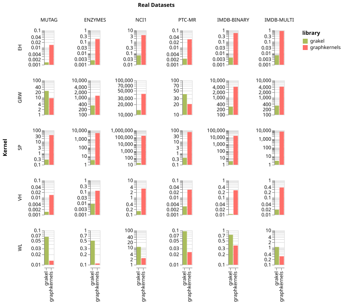
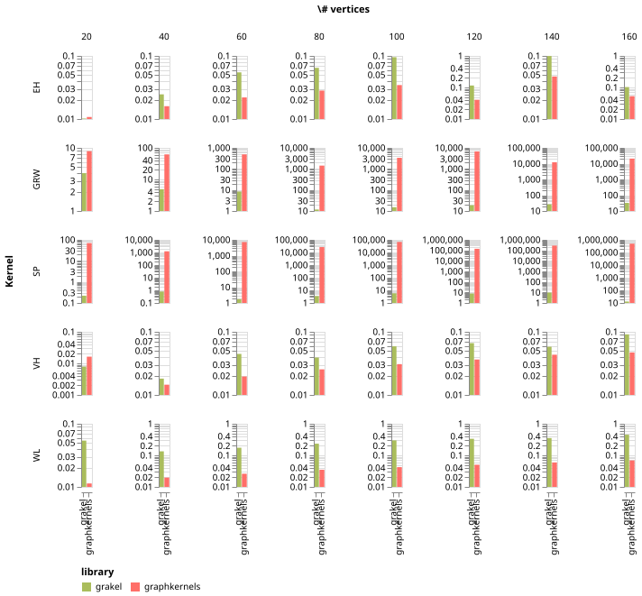
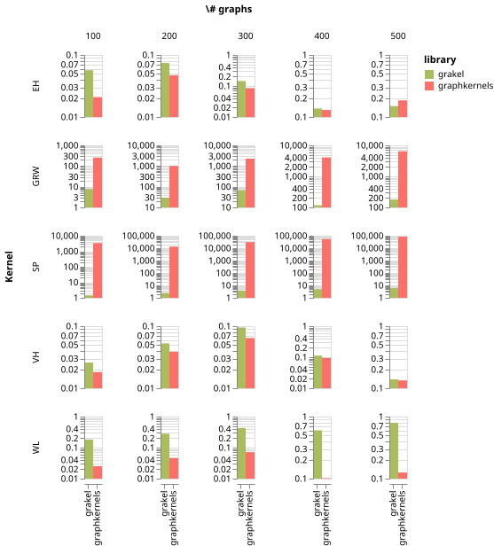

Comparison with Other Packages#
We next compare the running times of GraKeL and the graphkernels library [].
There are 6 common kernels in the two libraries: (1) the vertex histogram kernel (VH), (2) the edge histogram kernel (EH), (3) the geometric random walk kernel (GRW), (4) the shortest path kernel (SP), (5) the Weisfeiler-Lehman subtree kernel (WL), and (6) the graphlet kernel (GL). We compare the running time of the implementations of those kernels included in the two libraries on several real-world and synthetic datasets. It should be mentioned that the implementation of the graphlet kernel that is included in the graphkernels library crashed on all datasets (real-world and synthetic) except MUTAG. Hence, we report the running times of only the first 5 kernels.
Experimental Setup#
We use the two libraries to compute the kernel matrix of each dataset and we report CPU running times (in seconds). Hence, for a dataset that contains \(N\) graphs and a kernel \(k\), we report the running time for constructing the \(N \times N\) gram matrix using kernel \(k\). All experiments are conducted on a workstation running Linux with an Intel Xeon W-2123 CPU clocked at 3.60GHz and 64GB of RAM.
Real-World Datasets#
We first evaluate the two libraries on standard graph classification datasets derived from bioinformatics and chemoinformatics (MUTAG, ENZYMES, NCI1, PTC-MR), and from social networks (IMDB-BINARY, IMDB-MULTI). Note that the social network graphs are unlabeled, while all other graph datasets come with vertex labels. All considered kernels can handle discrete vertex labels, and we utilize those labels when they are available.
MUTAG |
ENZYMES |
NCI1 |
PTC-MR |
IMDB-BINARY |
IMDB-MULTI |
|
|---|---|---|---|---|---|---|
Max # vertices |
28 |
126 |
111 |
109 |
136 |
89 |
Min # vertices |
10 |
2 |
3 |
2 |
12 |
7 |
Average # vertices |
17.93 |
32.63s |
29.87 |
25.56 |
19.77 |
13.00 |
Max # edges |
33 |
149 |
119 |
108 |
1,249 |
1,467 |
Min # edges |
10 |
1 |
2 |
1 |
26 |
12 |
Average # edges |
19.79 |
62.14 |
32.30 |
25.96 |
96.53 |
65.93 |
# labels |
7 |
3 |
37 |
19 |
||
# graphs |
188 |
600 |
4,110 |
344 |
1,000 |
1,500 |
The Table above shows statistics of the 6 datasets, while the following Figure shows the running times of the implementations of the 5 kernels contained in the two libraries.
{kind=link}

We observe that the kernels of the GraKeL library are in general faster than those of the graphkernels library. The only exception is the WL kernel. Specifically, the implementation of WL in GraKeL is slower than that in graphkernels on all datasets. It is interesting to note that on some dataset the difference in running time between corresponding kernels of the two libraries is very large. For instance, computing the SP kernel on NCI1 took less than 20 seconds using the GraKeL library, and more than 45 hours using the graphkernels library. Furthermore, computing the GRW kernel on the same dataset using GraKeL and graphkernels takes less than 4 and more than 11 hours, respectively.
Synthetic Datasets#
We next evaluate how the two libraries scale as the size of the input graphs increases. More specifically, we generate random Erdős‐Rényi graph instances of increasing size. We increase the number of vertices from 20 to 160 in steps of 20. The average degree of all generated graphs is equal to 4. For each unique size (i.e., 20,30,…,160), we generate 100 random graphs. The Figure below illustrates the running time of the kernels of the GraKeL and the graphkernels libraries as a function of the number of vertices in the graphs.
{kind=link}

In general, we observe that the VH, EH and WL implementations in GraKeL are slower than the corresponding implementations in graphkernels. However, the difference in running time is in all cases very low (less than 0.5 seconds). On the other hand, the SP and GRW implementations in GraKeL are much faster than the corresponding implementations in graphkernels, and the difference in running time increase a lot as the size of the graphs increases.
We also measure the running time of the kernels of the two libraries as a function of the size of the dataset (i.e., number of graphs). Once again, we generate random Erdős‐Rényi graph instances consisting of 50 nodes and 100 vertices (i.e., average degree equal to 4). We increase the number of graphs from 100 to 500 in steps of 100. The Figure below compares the running times of the kernels of the two libraries with respect to the number of graphs contained in the dataset.
{kind=link}

We can see that the WL kernel in graphkernels is faster than its corresponding implementation in GraKeL. The computation times of the implementations of VH in the two libraries are comparable to each other. Interestingly, the implementation of EH in graphkernels is faster than its implementation in GraKeL on small datasets. However, the difference in running time between the two implementations decreases as the size of the dataset increases, and the implementation of EH in GraKeL becomes more efficient when the dataset contains more tahn 400 graphs. Finally, the implementations of SP and GRW that are included in GraKeL are again much faster than the corresponding implementations in graphkernels.
Overall, the WL kernel in the graphkernels library is faster than that in GraKeL. However, the difference in running time is very small and therefore, the running time of the GraKeL implementation is by no means prohibitive. The implementations of the VH and EH kernels in the two libraries perform comparably in terms of running time, while GraKeL contains much more efficient implementations of the SP and GRW kernels compared to graphkernels.